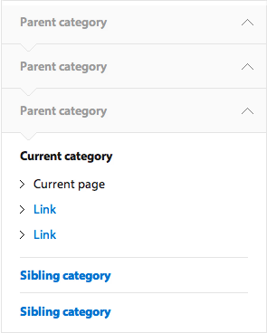
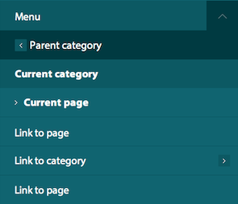

As with the global navigation, the local navigation menu has different display formats for desktop and mobile.
It provides a single, extensible navigation model that can be used for any University of Cambridge local website, no matter how many hierarchical levels it has.
Usage: larger screen widths
Single-level local navigation
If the local navigation is only one level deep, a simple horizontal navigation bar is used. Each link in the horizontal navigation bar links to a subsection page with no left-hand navigation (see Subsection page without left-hand navigation).
If the horizontal navigation bar contains too many labels to fit on one line, it will wrap to a second line.
Avoid this if possible, though, as it makes for a slightly cluttered view. Short category labels will help
and are easier for the user to scan.
Multi-level local navigation
If one or more of the links in a section’s horizontal navigation bar have additional levels of pages beneath them, dropdown menus are used to show the links at the second level. Pages at subsequent levels use the Subsection page with left-hand navigation template.
The left-hand navigation looks like this:

The current category and page title are always highlighted. Sibling and children links for the current category are displayed.
As the user drills deeper into the hierarchy, the left-hand menu also indicates their current location via a 'vertical breadcrumb' in addition to the links for the current page. This provides additional signposting for users deep linking from, eg, search engines.
When a user clicks on a Section title in the local navigation, the user must be automatically taken to a nominated page in that category. There can be no ‘empty’ categories. Therefore, every category in the local navigation must contain at least one page.
Usage: smaller screen widths
At smaller screen widths, the entire local navigation menu is contained within a single menu. It lets the user jump directly to any page within the current local site.
The menu displays the Current category and page title, plus child links for the current category. The ‘Back’ link links to the category one level up in the hierarchy. At the top level (eg Faculty homepage), no ‘Back’ link is displayed.

Once the user descends to a level in the hierarchy where no further navigation links are available, no child list is shown.
Interaction
When first opened, the menu must always display the links relevant to the current page, so that the user can orientate themselves. If the user closes and opens the Menu, it displays the default view again.
Opening the local navigation menu should close all other open panels visible on the screen.
CSS and media queries
Separate desktop and mobile views are created by using a 767px max-width media query to present a different navigation structure.
Use of Javascript
We have based the Javascript for the local navigation heavily on the script found on the Sony.com website. However there have been several changes
so whilst it may serve as a useful reference, the comments in the Custom.js file should be more helpful in terms of understanding the desired functionality.
For desktop users jQuery is used to detect the top level navigation items that have children pages. A class is set on these to denote the appearance of a drop down menu when clicked.
For desktop users clicking a top level item that has children will open a drop down menu. You cannot click this link to view the content on that page, instead an overview page
should be added to the top of the nested child list.
For all navigation items below the top level that have nested children, a title link, which replicates the text of the parent is added to name the nested list beneath.
This title link is hidden from desktop users but visible to mobile users and allows them to see which section they are currently viewing in the navigation. The click event
for title links is disabled so they are not clickable and the cursor is also removed.
For all navigation items that have nested children, a back link is also appended to the nested list beneath. For top level links the text of the back link
is hardcoded to read 'Back to section home'. For navigation items below the top level the text of the link is copied from the text in the title link of the parent UL.
This allows users to view which section they have come from in the mobile navigation.
A hover class is added via Javascript to allow older IE browsers to display a hover event on the LI in the navigation.
Depending on whether you are browsing in desktop or mobile mode clicking a link will either call the function to slide the menu
forward or back or show and hide the dropdown menu.
Modernizr is used to detect the inclusion of media queries to determine if the menu button should be dynamically appended for mobile resolutions.
The width of the mobile menu is also controlled by Javascript. This is set when the menu is opened but also triggered by a
resize event to ensure that in the case of a user changing orientation whilst viewing, that the menu stretches to fill
the screen and scrolls back or forward the correct amount.
The mobile menu should default to showing you the section of the page you are currently viewing. When the menu is opened the display menu
function walks upwards through the DOM from where the current page class is detected and appends the correct classnames to ensure all
layers of the menu are visible in the CSS and sets the menu position variable to determine which layer of navigation is being viewed.
When the menu is closed these classes are all removed and the menu is positioned absolutely off the stage again to hide it from view.
The sliding animation to control the nested layers of navigation is controlled by multiplying the menu position and the width of the menu.
This calculation is used to animate the CSS left property of the navigation.
Desktop users without Javascript will see the fully expanded navigation list in the page. Mobile users without Javascript will not be able to access the navigation.
Component variants
N/a